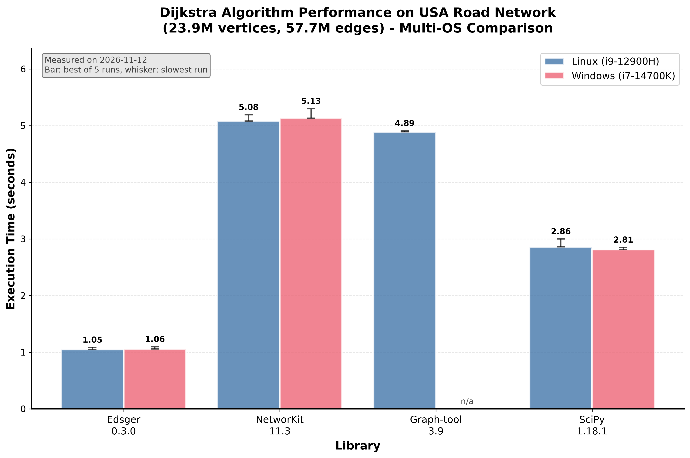

Benchmarks¶
Dijkstra’s algorithm is timed on the USA road network of the 9th DIMACS implementation challenge, with the travel time as edge weight. This graph has 23,947,347 vertices and 57,708,624 edges. Edsger is compared with NetworKit, graph-tool and SciPy.
Method¶
Each library computes the shortest path lengths from vertex 1000 to all the vertices, without storing the paths. Only this computation is timed: loading the network and building the graph of each library are left out. The reported time is the smallest of 5 runs.
Library |
Call |
|---|---|
Edsger |
|
NetworKit |
|
graph-tool |
|
SciPy |
|
Results¶


In the figure, a bar is the best of the 5 runs and its whisker goes up to the slowest one. The table gives the best run times in seconds, measured on 2026-11-12.
Library |
Version |
Linux |
Windows |
|---|---|---|---|
Edsger |
0.2.0 (development) |
1.05 |
1.06 |
SciPy |
1.18.1 |
2.86 |
2.81 |
graph-tool |
3.9 |
4.89 |
|
NetworKit |
11.3 |
5.08 |
5.13 |
graph-tool is not available on Windows.
The Linux and Windows columns come from two different machines, so they do not compare the operating systems. The libraries can be compared within a column.
Linux |
Windows |
|
|---|---|---|
CPU |
Intel Core i9-12900H (laptop) |
Intel Core i7-14700K (desktop) |
System |
Linux 5.15, glibc 2.35 |
Windows 11 |
Python |
3.14.2 |
3.14.10 |
NumPy, pandas |
2.5.4, 3.1.1 |
2.5.4, 3.1.1 |
Edsger build |
From source, Clang 14, |
From source |
Compilers¶
On Linux, the compiler has a visible effect on the Dijkstra code. The following timings were taken on the same i9-12900H with the same source code and the same graph, the process being pinned to one core, best of 7 runs.
Build |
Run time (s) |
|---|---|
GCC 11, |
1.22 |
Clang 14, |
1.07 |
GCC 14, baseline x86-64 |
1.18 |
Clang 21, baseline x86-64 |
1.08 |
The Linux wheels on PyPI are built as in the last row. The path lengths are bit-identical in the four cases.
Running the benchmark¶
The scripts are in the scripts directory of the repository, with the pinned versions of the packages in requirements_linux.txt and requirements_windows.txt.
cd scripts
python benchmark_comparison_os.py -d /path/to/DIMACS_road_networks -n USA -r 5
python plot_benchmark_comparison.py
The first script reads the network from the Parquet file USA/USA-road-t.USA.gr.parquet of the data directory, runs the four libraries and writes the timings to a JSON file. The second one draws the figure from the JSON files that it finds. When Edsger was measured from a development build, its recorded version (edsger_version, such as 0.1.7.post1.dev22+g00f6618d5) is not a release: the edsger_release field of system_info gives the release with the same code, which is the version shown in the figure.
The download of the DIMACS networks and their conversion to Parquet files are described in a blog post.